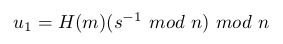

1. Introduction
1.1. Pourquoi un tel document
Faire des calculs à la main sur des signatures électroniques est très ludique.
Il faut s’entendre sur le terme "à la main". Au fil du document nous ne ferons aucun calcul à la main ni même avec une calculatrice de bureau. Les nombres manipulés sont beaucoup trop grands. Même à supposer que l’on décide d’utiliser une calculatrice de bureau (la chose est sans doute possible, en transférant les données depuis un PC), il faudrait la programmer en raison du nombre d’étapes de calcul.
1.2. Contenu
Cet article décrit les calculs à faire pour vérifier des signatures RSA et ECDSA, dans le cadre x509 et 2D-Doc.
- RSA, ECDSA
-
RSA et ECDSA permettent de signer [1] avec une paire de clés privée et publique. La clé privée est utilisée pour signer. La clé publique permet de vérifier la signature.
-
RSA dans le contexte x509 : cas du certificat d’un serveur https
-
ECDSA dans le contexte x509 : création d’un certificat x509 auto-signé, afin de se familiariser avec les calculs sur les courbes elliptiques
-
ECDSA dans le contexte 2D-Doc : vérification d’un code 2D-Doc, qui est le standard du Certificat Électronique Visible
-
openssl pour travailler sur les certificats x509 en ligne de commande
-
pkfile pour extraire la partie signée d’un certificat et dder pour afficher certains contenus binaires
-
python ou bc pour faire des calculs avec des nombres entiers de grande taille
-
Conversion entre encodage PEM et encodage binaire (Linux : base64, Windows : notepad++)
-
Édition de contenu de fichier binaire (Linux : gvim/xxd, Windows : notepad++)
|
Note
|
Windows versus Linux
Ce document s’adresse aux utilisateurs de Windows et Linux. Il peut arriver que l’outil ou la commande à employer diffère entre les deux environnements, dans ce cas les deux sont présentés. |
2. Le format x509
2.1. Visualisation d’un certificat x509
A l’aide d’un navigateur, ouvrir une page en https et afficher le certificat. Les exemples de ce document sont réalisés avec le certificat https du site https://letsencrypt.org/.
-
Cliquer sur l’icône de cadenas à gauche de la barre d’adresse et cliquer sur la flèche droite (Figure 1)
-
Cliquer sur Plus d’informations (Figure 2)
-
Cliquer sur Afficher le certificat (Figure 3)
-
Afficher l’onglet Détails et parcourir les différents champs du certificat (Figure 4, 5 et 6)
Nous nous intéresserons à la partie supérieure (Hiérarchie des certificats) plus tard.
Pour le moment examinons le certificat. L’affichage de Firefox en dessous de Champs du certificat liste trois parties :
-
Le certificat proprement dit, qui contient beaucoup d’informations structurées sur plusieurs niveaux hiérarchiques
-
L’algorithme de signature du certificat, dans notre exemple, PKCS #1 SHA-256 avec chiffrement RSA
-
La signature du certificat, ici, une suite de 256 octets
Cette structure en trois parties est toujours respectée pour un certificat x509. A noter qu’Internet Explorer et Chrome affichent les mêmes informations mais sans faire ressortir la structure trois parties.
2.2. Structure d’un certificat x509
Où la structure d’un certificat est-elle définie, et quelle est cette définition ?
Une recherche sur un moteur de recherche avec les mots-clés RFC et x509 produit l’URL suivante dans les premières réponses :
Et effectivement la[2] RFC 5280 définit le format x509 version 3.
Affichons-la. Dans la section 4.1 se trouve la définition suivante.
...
4.1. Basic Certificate Fields
The X.509 v3 certificate basic syntax is as follows. For signature
calculation, the data that is to be signed is encoded using the ASN.1
distinguished encoding rules (DER) [X.690]. ASN.1 DER encoding is a
tag, length, value encoding system for each element.
Certificate ::= SEQUENCE {
tbsCertificate TBSCertificate,
signatureAlgorithm AlgorithmIdentifier,
signatureValue BIT STRING }
...
La suite définit les différents éléments du certificat, à savoir TBSCertificate et AlgorithmIdentifier.
En ASN.1 le mot-clé SEQUENCE sans autre précision indique que la valeur est constituée d’une suite de valeurs elles-mêmes spécifiées en ASN.1. La valeur Certificate contient donc, à la suite :
-
La valeur tbsCertificate, soit le certificat à signer (to be signed Certificate)
-
La valeur signatureAlgorithm, soit l’identification de l’algorithme de signature
-
La valeur signatureValue, soit la signature elle-même
2.3. Hiérarchie des certificats
Dans la partie tbsCertificate de letsencrypt.org, intéressons-nous à deux éléments en particulier, l'émetteur du certificat et le sujet du certificat.
-
Le sujet du certificat a pour CN (Common Name) letsencrypt.org et c’est le dernier nom qui est affiché dans la hiérarchie des certificats (partie supérieure de la fenêtre).
-
L'émetteur du certificat a pour CN TrustID Server CA A52 et on peut voir ce nom au-dessus de letsencrypt.org dans la hiérarchie.
L’émetteur et le sujet ont également le pays © et l’organisation (O) définis dans leur nom, ainsi que d’autres éléments. Le "nom simple" ou "nom court" du certificat est son CN. Le standard x509 ne définit pas cette notion de "nom simple" ou "nom court", nous l’employons ici pour préciser que dans la pratique, le CN est le véritable nom du certificat, les autres éléments donnant des informations annexes.
Cela dit, le nom (au sens du standard x509) est constitué du DN (Distinguished Name), il s’agit de la la totalité des éléments qui le composent (et non pas seulement du CN).
Le lien hiérarchique est toujours établi entre un émetteur et un sujet. L’émetteur est celui qui signe le certificat, le sujet est celui qui est signé. Voir figures 7 et 8.
Un certificat peut être à la fois émetteur (d’autres certificats sont signés par lui) et sujet (il est lui-même signé par un autre certificat), et cette chaîne forme une structure hiérarchique. Dans notre exemple, on voit que le certificat TrustID Server CA A52 est lui-même signé par IdenTrust Commercial Root CA 1.
|
Note
|
|
Pour signer, l’émetteur utilise sa clé privée. La vérification de la signature est faite avec sa clé publique. Ainsi pour vérifier l’authenticité du certificat https de letsencrypt.org, nous aurons besoin de la clé publique de son émetteur, TrustID Server CA A52.
Ce principe est toujours respecté avec les certificats x509, que ce soit avec RSA ou d’autres mécanismes à clé publique / clé privée.
Nous allons maintenant passer à la vérification de la signature RSA.
3. Vérification de signature RSA
3.1. La signature RSA
3.1.1. Calcul de la signature
3.1.2. Vérification de la signature
-
Le vérificateur calcule M = Se mod n
-
Il calcule M' = hash("tbsCertificate")
-
Si on a l’égalité M = M', la signature est vérifiée
3.2. Vérification du certificat de letsencrypto.org
3.2.1. Choix d’un programme de calcul
Nous avons besoin d’une "calculatrice" qui calcule sur des nombres entiers arbitrairement grands, sans perte de précision. Dans la suite de ce document, c’est bc qui sera utilisé [6].
|
Note
|
Le choix de bc
|
|
Note
|
Alternatives à bc
|
| bc | python |
|---|---|
Saisie d’un entier en hexadécimal |
|
Exécuter au préalable
Exemple :
(Attention les caractères hexadécimaux doivent être en majuscule.) |
Saisir l’entier précédé de 0x Exemple :
|
Affichage d’entier en hexadécimal |
|
Exécuter au préalable
Exemple :
|
Interpoler avec %x Exemple :
|
3.2.2. Enregistrement de la signature sous forme d’entier
-
Depuis le navigateur, afficher la signature du certificat de letsencrypt.org.
-
Sélectionner la signature et la copier-coller dans un éditeur de texte.
-
Supprimer les caractère surnuméraires (enlever les ':' et les sauts de ligne).
-
Passer les caractères hexadécimaux en majuscule [10].
-
Ajouter s= devant le nombre, et ajouter une première ligne ibase = 2 * 8.
-
Enregistrer dans val.b.
Voir figures 9 et 10.
L’instruction ibase = 2 * 8 ordonne à bc de lire les nombres en hexadécimal. ibase = 16 fonctionne aussi, à condition qu’ibase soit égal à 10 (valeur par défaut) au moment d’exécuter ibase = 16. Si ibase est déjà égal à 16 et que l’on exécute ibase = 16, une erreur se produit car bc lit 16 en hexadécimal (soit 22) et cette valeur est interdite.
|
Note
|
|
Le navigateur affiche l’exposant de la clé RSA (le nombre noté e tout à l’heure) sous forme décimale, alors que dans le script bc nous l’entrons en hexadécimal. Pour convertir un nombre décimal en hexadécimal, exécuter dans un terminal :
$ echo "obase=16; 65537" | bc 10001
$ echo obase=16; 65537 | bc.exe 10001
3.2.3. Enregistrement de la clé publique sous forme d’entier
Depuis le navigateur :
-
Sélectionner le certificat de TrustID Server CA A52 et afficher sa clé publique.
-
Sélectionner la valeur de la clé publique et la copier-coller dans val.b. Il faut le faire en deux fois, une fois pour le modulo de 256 octets (variable n) et une fois pour l’exposant (variable e).
Ne pas oublier de passer les caractères hexadécimaux en majuscule.
A l’arrivée, val.b contient trois variables, s (la signature du certificat), n et e (la clé publique). On a ajouté la sauvegarde et la récupération d'ibase, c’est une bonne pratique.
save_ibase=ibase
ibase=2*8
s=8049A7CE9627701FC4E520876B97271A8AEF34D13A5ECA776172BD7C9053DBEF9C8504E4C85629135D934D1F9C6FB09375189812B3475D5F0797F5D32BC9B11B12BC29733DCD40E57EB97BC819F21939764A4F2A270036906BAE5FD280D68DCC16428C0FCD3D213025BCFA10A6697529ED1A168E0D2CEFCB24A9C9A64C85F0BF8942B91F2CD1E92989F73EF9F2267BAB5535C3388C10C3C1D55DBC3A50A01A77CEDED612862D83A9B1A68A08B68DC35BE0F2E23E3BD9AFD4C0BA1537CFD694A5AF5D6CF8887861A9DCB89B9DE35AD3F255C251B0ECD54C2CF693DD5732EDF33939334BDB1E64C29636E0502E57914984BDA74C7E05AC948403D2BEBE051452F8
n=9769D7999885023FE9264276E8F4733FA932442690782E78579119A05D762B49F9935A5D5ACE82F3C2D8E54C367A2B1D0DDBA6A7FE91127CED7201B78CA1C5DACC9DFE09FB57E214470FE89E918F942D8032939303F5287868BA7E0F42B4317A0514225333E4A3AD6C8FAFBE636BB2329FD917B9C9E0607C99D631E1E4A0B73FAFB232AC7E8C9CDC02EBE1BC1F149CBC91F7B2FB42F3E1202BCBBF8FF3B37063FAF7752802ABC5D4B0EDEA257F87CD371496833C40021BA09E19477FF3B0CCC52560B83512F151EB17DCFC5BA5D99BEF404CD77771E9FB458B7EF2E369B042661746903ACD463DF1B0096FDCFFEE3361CAFCC72E3CED5E0AD1BF221269804B23
e=10001
ibase=save_ibase3.2.4. La fonction powmod
Les amateurs de python ont encore un avantage à ce stade. L’équivalent de la fonction powmod y est disponible sous forme d’un troisième paramètre (facultatif) à la fonction pow.
Pour ceux qui utilisent bc comme moi, il faut écrire la fonction.
La fonction powmod met en oeuvre l’algorithme d’exponentiation rapide, décrit à cette URL [9]. En fait nous sommes dans un contexte modulaire et d’après Wikipédia le nom exact de l’algorithme est exponentiation modulaire. Un article y est consacrée [10]. Les deux algorithmes font appel au même principe, mais le second exploite le contexte modulaire pour que les nombres manipulés n’atteignent pas une taille démesurée. C’est le second algorithme (exponentiation modulaire) dont nous avons besoin pour la suite.
Sur Internet, on peut trouver la fonction powmod dans de nombreux scripts bc à télécharger. À noter qu’elle porte parfois d’autres noms, mpower par exemple.
define powmod(a, b, c) {
auto p, r
p = a
r = 1
while (b > 0) {
if (b % 2) r = (r * p) % c
p = (p * p) % c
b /= 2
}
return r
}3.2.5. Calcul de M
Nous voilà prêts pour calculer M.
-
Lancer la commande suivante [11] :
$ BC_LINE_LENGTH=0 bc powmod.b val.b
-
Dans le shell bc, exécuter [7] (pour que les nombres soient affichés en hexadécimal)
obase=2*8
-
Toujours dans le shell bc, exécuter
powmod(s, e, n)
Rappelons que c’est S (variable s dans val.b) qui doit être élevé à la puissance e, modulo n.
|
Important
|
Si vous exécutez obase = 16, vous obtiendrez le résultat voulu (obase défini à 16 décimal) seulement si ibase vaut 10. Pour parer à toute éventualité, le plus simple est d’utiliser 2 * 8 comme ici (ou bien 2 ^ 4, ou quoi que ce soit qui n’utilise que des nombres à un seul chiffre). |
Le résultat (figure 12) avec tous ces F prouve avec une quasi certitude que le calcul s’est bien passé.
Les F correspondent au 'padding' standard effectué pour une signature RSA, la valeur qui suit (à partir de 303130) est le hash de tbsCertificate "emballé".
"Emballé", c’est-à-dire ? La valeur est spécifiée en ASN.1 et codée en DER, et elle contient d’autres informations que le seul hash de tbsCertificate.
C’est ce que nous allons voir dans le chapitre suivant.
3.2.6. Analyse de M
Nous allons procéder en trois étapes :
-
Enregistrement du contenu hexadécimal
-
Conversion du contenu hexadécimal en binaire
-
Examen du contenu binaire avec la commande openssl asn1parse
1 Enregistrement du contenu hexadécimal
Faisons un copier-coller de M (en hexadécimal) à partir de l’octet qui suit l’octet nul, et enregistrons le résultat dans le fichier m.hex.
3031300D0609608648016503040201050004208364DA78F1FD8DCC6812E568268BF2DAF8791BE383109745388879C496A8C3DD
2 Conversion du contenu hexadécimal en binaire
Maintenant nous allons convertir m.hex en binaire, puisque le contenu actuel est le codage des octets en hexadécimal de la signature, ce n’est pas la signature elle-même.
Exécuter la commande
$ xxd -r -p m.hex > m.der
Le plus simple est d’utiliser notepad++ et d’enregistrer le fichier transformé avec le nom m.der.
|
Attention
|
Ne pas laisser un saut de ligne à la fin du fichier qui s’ajouterait aux données binaires de la signature. |
Le fichier m.der contient les octets que l’on avait dans la signature, ce que l’on peut vérifier facilement…
-
… sous Linux avec la commande hd (on peut aussi utiliser hexdump ou xxd).
-
… sous Windows avec notepad++, en reconvertissant en hexadécimal et en vérifiant que l’on retombe sur ses pieds.
3 Examen du contenu DER du fichier m.der
Exécuter la commande
$ openssl asn1parse -inform der -in m.der
Nous verrons dans le chapitre suivant la syntaxe ASN.1 plus en détail.
La commande openssl (figure 17) nous donne deux informations :
-
L’algorithme de hash est SHA-256, ce que l’on savait déjà d’après le contenu de signatureAlgorithm (deuxième partie de la structure en trois parties du certificat).
-
Nous voyons la valeur du hash (le bloc
prim: OCTET STRING) sous forme hexadécimale. Sa longueur correspond bien au SHA-256 (256 bits de longueur soit 32 octets).
Nous savons désormais que la signature SHA-256 de la valeur tbsCertificate du certificat de letsencrypt.org devrait être :
8364DA78F1FD8DCC6812E568268BF2DAF8791BE383109745388879C496A8C3DD
C’est ce que nous allons vérifier en calculant maintenant M'.
3.2.7. Calcul de M'
Nous allons calculer M' en deux étapes :
-
Extraction de tbsCertificate du certificat letsencrypt.org.
-
Calcul du hash SHA-256 de tbsCertificate.
Mais avant d’extraire tbsCertificate, nous devons comprendre comment le certificat est structuré et codé.
ASN.1 et DER
Au début de ce document, nous avons observé que la section 4.1 de la RFC 5280, qui définit la structure des certificats x509 v3, contient cette définition :
Certificate ::= SEQUENCE {
tbsCertificate TBSCertificate,
signatureAlgorithm AlgorithmIdentifier,
signatureValue BIT STRING }
Un certificat x509 est défini selon la syntaxe ASN.1. L’encodage peut être BER [12] , CER [13] ou DER [14] .
Ces trois standards sont très proches, l’intérêt de DER étant son unicité : une structure de données spécifiée en ASN.1 ne peut être encodée en DER que d’une manière, et une seule. BER et CER permettent certaines variations dans la manière d’encoder.
Pour ne pas alourdir la rédaction, nous parlerons toujours d’encodage DER ou simplement DER, même lorsque les données manipulées pourraient ne pas être DER [15] .
ASN.1 structure chaque valeur (data value dans le document X.690) selon la typologie T - L - V ou Tag - Length - Value. La forme "longueur indéfinie" apporte un quatrième élément, "end-of-contents" (marqueur de fin de valeur), que nous ignorerons car DER ne permet pas cette forme.
- [T]ag
-
Définit toutes les caractéristiques de la valeur, notamment son type, par exemple une date (
UTCTime), une séquence (SEQUENCEouSEQUENCE OF), un entier (INTEGER), et bien d’autres. Il indique également si l’encodage de la valeur est primitive ou contructed.- Encodage primitive
-
La donnée ne contient pas de sous-structure
- Encodage constructed
-
La donnée est elle-même une structure qui suit la typologie T-L-V, et ici, cette structure est elle-même définie en ASN.1 [16].
- Structure hiérarchique
-
La différence primitive - constructed est à la base de la structure hiérarchique d’une spécification ASN.1, les éléments constructed étant les branches, les éléments primitive étant les feuilles.
Dans la définition d’un Certificate ci-dessus, le type
SEQUENCEest, par définition du typeSEQUENCEen ASN.1, constructed. Cela signifie que la valeurSEQUENCEest elle-même une structure ASN.1, ce qu’on peut voir dans la liste des trois composants d’un certificat définie entre accolades.
- [L]ength
-
Donne la longueur de la valeur en octets.
- [V]alue
-
Est la donnée elle-même. Dans ce document nous employons le terme valeur (dans le document X.690 le terme est data value).
Affichons le contenu DER avec l’utilitaire en ligne de commande dder en exécutant la commande suivante :
$ dder -width 8 -recursive "| " m.der
La copie d’écran de la figure 18 a été faite sous Windows pour changer un peu.
La description de la valeur indique -cons ou -prim, pour constructed ou primitive.
Chaque fois que le tag indique une valeur constructed (ici, il s’agit à deux reprises du type SEQUENCE, qui est obligatoirement constructed), on descend d’un niveau dans la structure hiérarchique, que l’on a fait ressortir ici avec l’option -recursive "| ".
Extraction de tbsCertificate du certificat letsencrypt.org
Étape 1 de l’extraction
Commençons par enregistrer le certificat depuis le navigateur, dans le fichier letsencryptorg.der.
Afficher le certificat comme vu précédemment, puis afficher l’onglet Détails et cliquer sur le bouton Exporter. Ensuite sélectionner Certificat X.509 (DER).
Afficher le certificat, puis cliquer sur le bouton Copier dans un fichier…. Ensuite sélectionner X.509 binaire encodé DER.
|
Note
|
PEM versus DER
Avec les certificats x509, l’encodage PEM est une surcouche de DER qui consiste à :
Si vous avez enregistré le certificat avec un encodage PEM, vous pouvez le convertir en DER avec openssl. Exemple pour letsencrypt.cer (PEM) que l’on convertit en letsencrypt.der (DER) - comme on peut voir, l’encodage par défaut avec openssl est PEM. $ openssl x509 -in letsencryptorg.cer -outform der -out letsencryptorg.der Fig. 21
Fig. 22
Vous pouvez faire cette conversion "à la main" en enlevant la première et la dernière ligne et en faisant une conversion BASE64 → binaire avec des outils comme base64 (Linux) ou notepad++ (Windows). |
Étape 2 de l’extraction
Nous disposons maintenant d’un certificat enregistré en binaire (encodage DER) dans le fichier letsencryptorg.der, dont nous allons à présent extraire la partie tbsCertificate.
|
Note
|
Les outils dder et pkfile (pkfile est présenté plus loin) peuvent lire indifféremment des fichiers codés en PEM ou en DER. Si le fichier est PEM, il est décodé à la volée. |
Il y a deux solutions pour ce faire
-
À la main
-
À l’aide de l’utilitaire pkfile. pkfile est disponible à cette URL [12].
Un éditeur de fichier binaire ferait l’affaire, mais la manipulation est plus claire si l’on affiche le contenu hexadécimal avec dder.
Exécuter la commande
$ dder -recursive "| " -hex letsencryptorg.der > d
|
Note
|
Encodage des fichiers affichés par dder
dder lit indifféremment des fichiers PEM et DER. Si le fichier est PEM il décode (et décrypte si nécessaire) les données en mémoire avant d’afficher le contenu DER. Donc la commande aurait pu être (avec le fichier letsencryptorg.cer encodé en PEM) : $ dder -recursive "| " -hex letsencryptorg.cer > d |
Ouvrir le fichier d dans un éditeur de texte. Comme on a affiché le contenu avec un décalage à chaque niveau hiérarchique (option -recursive "| "), la structure en trois parties des certificats x509 ressort bien.
Supprimer les deux premières lignes et un certain nombre de lignes à la fin pour que seul demeure le contenu de tbsCertificate. Ci-dessous, le texte à conserver est le texte sélectionné (les lignes du milieu ont été supprimées pour condenser l’image).
Ensuite :
-
Supprimer les "|" en début de ligne
-
Supprimer l’offset (numéro sur six caractères)
-
Supprimer le texte après les codes hexadécimaux (une fois supprimé les "|" et l’offset en début de ligne, ce sont tous les caractères au-delà de la 55e position qu’il faut supprimer).
-
Supprimer tous les espaces
On retrouve (figure 25) une sous-partie du fichier letsencryptorg.der, codée en hexadécimal, qui commence par 308205ea et se termine par 2e6f7267.
|
Note
|
Cette manipulation peut être faite avec un programme d’édition de fichier binaire, en ne gardant que les données à partir de l’offset 4, d’une longueur de 1518 octets. |
Il faut ensuite convertir le contenu "codé hexadécimal" en binaire comme cela a été vu précédemment (commande xxd -r -p sous Linux, avec notepad++ sous Windows).
Au final on obtient le fichier tbs.der comme montré sur la figure 26.
Exécuter la commande
$ pkfile letsencryptorg.der -l 2
Le résultat visible sur la figure 27 nous montre que le tbsCertificate correspond à la valeur SEQUENCE de 1518 octets (4 octets d’en-tête, 1514 octets de données). pkfile donne à cette valeur les coordonnées 1.1.
Nous enregistrons cette valeur en binaire dans le fichier tbs2.der en exécutant la commande
$ pkfile letsencryptorg.der -n 1.1 -x -o tbs2.der
|
Note
|
Encodage des fichiers analysés par pkfile
pkfile lit indifféremment des fichiers PEM et DER. Si le fichier est PEM il décode (et décrypte si nécessaire) les données en mémoire avant de traiter le contenu DER. |
Calcul du hash de tbsCertificate
Le calcul des différents algorithmes de hash est disponible en ligne de commande. Pour SHA-256 le programme est sha256sum.
Exécuter
$ sha256sum tbs.der
Lels outils de calcul de hash ne sont pas disponibles par défaut. Voici quelques solutions (d’autres existent) :
Exemple avec pkfile, exécuter
$ pkfile --sha256 tbs.der
Les captures d’écran montrent également le calcul sur le fichier tbs2.der (créé avec pkfile), qui est ben identique à tbs.der, ce qui confirme au passage l’équivalence des deux méthodes pour extraire tbsCertificate.
Le hash trouvé (M') concorde avec la signature (M), ce qui valide la signature du certificat letsencrypt.org
3.3. Conclusion
Nous arrivons au terme des manipulations à effectuer pour vérifier la signature RSA d’un certificat x509. Les calculs étaient élémentaires, mais cela nous a permis de voir :
-
Les différents formats et encodages et les outils pour passer de l’un à l’autre
-
PEM versus DER
-
BASE64 versus binaire
-
Hexadécimal versus binaire
-
ASN.1
-
La structure de certificat x509
-
-
Les solutions pour calculer sur des entiers de grande taille
-
python (évoqué ici mais non détaillé) et bc
-
Les transformations éventuelles et précautions à prendre pour calculer en saisie et affichage hexadécimal
-
La création de la fonction powmod dans bc
-
-
Outils divers
-
Calcul du hash d’un fichier
-
Extraction d’une valeur (c’est-à-dire, d’une sous-partie) d’un fichier encodé en DER
-
La signature a été vérifiée mais le certificat lui-même n’a pas été validé en totalité. Il y a deux raisons à cela.
-
Une fois un certificat vérifié, il faut vérifier son parent dans la hiérarchie (le certificat qui l’a signé), et ainsi de suite, jusqu’à vérifier un certificat connu dans la base des certificats du navigateur (les certificats racine).
-
Le navigateur vérifie si les certificats rencontrés ont été révoqués à l’aide des Listes de Révocation des Certificats ou CRL (Certificate Revocation List).
4. Vérification de signature ECDSA
4.1. Cryptographie à courbes elliptiques
Ce document se concentre sur les problématiques de calcul effectif et de formats de fichiers. Nous n’allons pas expliquer ici toute la cryptographie à base de courbes elliptiques, nous allons simplement en résumer les grandes lignes, donner les formules applicables et quelques définitions.
4.1.1. Les deux familles de courbes elliptiques
- Les courbes sur F2m (binary field)
-
La notation F2m est un raccourci. On a F2m = F2[x]/(p(x)) où p(x) est un polynôme irréductible de degré m (source : [15]). Les "nombres" manipulés sont des polynômes sur F2 et les opérations sont faites modulo p(x). L’équation de la courbe (source : [16]) est
y2 + xy = x3 + ax2 + b
Les opérations sur F2m portent sur des polynômes et leur arithmétique est différente de l’arithmétique usuelle sur les nombres entiers. Par exemple quel que soit A de F2m, on a A + A = 0 (soit A = -A pour tout A).
- Les courbes sur Fp (prime field)
-
p est un nombre premier. On a Fp = Z/pZ (source : [17]). Les opérations sont faites modulo p. L’équation de la courbe est (source : [16])
y2 = x3 + ax + b
4.1.2. Les paramètres de domaine
Ces paramètres définissent les caractéristiques de la courbe. Une clé est définie pour une courbe et une seule, la courbe étant entièrement déterminée par ses paramètres de domaine. On parle aussi de paramètres de la courbe.
Source : [16].
-
Sur F2m, les paramètres sont (m, f(x), a, b, G, n, h)
-
m, entier qui définit F2m.
-
f(x), polynôme irréductible de degré m.
-
a et b, les paramètres de l’équation y2 + xy = x3 + ax2 + b.
-
G, le générateur d’un sous-groupe du groupe E(F2m).
-
n est l’ordre du groupe généré par G.
-
h est le cofacteur, c’est le nombre d’éléments de E(F2m) divisé par n.
-
-
Sur Fp, les paramètres sont (p, a, b, G, n, h)
-
p, nombre premier.
-
a et b, les paramètres de l’équation y2 (mod p) = x3 + ax + b (mod p).
-
G, le générateur d’un sous-groupe du groupe E(Fp).
-
n est l’ordre du groupe généré par G.
-
h est le cofacteur, c’est le nombre d’éléments de E(Fp) divisé par n.
-
Toute information pratique sur les courbes elliptiques (clé privée ou publique, signature…) n’est exploitable qu’avec les paramètres de domaine de la courbe elliptique utilisée. Les paramètres de domaine peuvent être donnés de deux manières : tels quels (les différents éléments vus précédemment et qui définissent une courbe, tels que a, b, G, etc.), ou bien sous la forme d’une courbe nommée.
openssl peut lister les courbes nommées :
$ openssl ecparam -list_curves secp112r1 : SECG/WTLS curve over a 112 bit prime field secp112r2 : SECG curve over a 112 bit prime field [...] brainpoolP512r1: RFC 5639 curve over a 512 bit prime field brainpoolP512t1: RFC 5639 curve over a 512 bit prime field
La commande suivante permet d’afficher les détails d’une courbe, exemple avec secp256r1 :
$ openssl ecparam -name secp256r1 -noout -text using curve name prime256v1 instead of secp256r1 ASN1 OID: prime256v1 NIST CURVE: P-256
openssl nous avertit que secp256r1 (définition "SECG" : [18]) est en fait la courbe NIST P-256 (définie ici [19]), qui porte le nom prime256v1 dans le standard X9.62.
Tout ça pour dire quoi ? Rien, à part que l’on peut se féliciter de vivre à l’heure d’Internet pour s’y retrouver dans la jungle des documents de normalisation.
Et les paramètres de domaine ? Il faut demander à openssl d’afficher les paramètres de la courbe sous forme explicite :
$ openssl ecparam -name secp256r1 -noout -text -param_enc explicit
using curve name prime256v1 instead of secp256r1
Field Type: prime-field
Prime:
00:ff:ff:ff:ff:00:00:00:01:00:00:00:00:00:00:
00:00:00:00:00:00:ff:ff:ff:ff:ff:ff:ff:ff:ff:
ff:ff:ff
A:
00:ff:ff:ff:ff:00:00:00:01:00:00:00:00:00:00:
00:00:00:00:00:00:ff:ff:ff:ff:ff:ff:ff:ff:ff:
ff:ff:fc
B:
5a:c6:35:d8:aa:3a:93:e7:b3:eb:bd:55:76:98:86:
bc:65:1d:06:b0:cc:53:b0:f6:3b:ce:3c:3e:27:d2:
60:4b
Generator (uncompressed):
04:6b:17:d1:f2:e1:2c:42:47:f8:bc:e6:e5:63:a4:
40:f2:77:03:7d:81:2d:eb:33:a0:f4:a1:39:45:d8:
98:c2:96:4f:e3:42:e2:fe:1a:7f:9b:8e:e7:eb:4a:
7c:0f:9e:16:2b:ce:33:57:6b:31:5e:ce:cb:b6:40:
68:37:bf:51:f5
Order:
00:ff:ff:ff:ff:00:00:00:00:ff:ff:ff:ff:ff:ff:
ff:ff:bc:e6:fa:ad:a7:17:9e:84:f3:b9:ca:c2:fc:
63:25:51
Cofactor: 1 (0x1)
Seed:
c4:9d:36:08:86:e7:04:93:6a:66:78:e1:13:9d:26:
b7:81:9f:7e:90
Tous ces paramètres ont été vus plus haut, sauf Seed. Qu’en est-il ?
Seed est un nombre arbitraire à partir duquel les autres paramètres de la courbe ont été déterminés, de manière vérifiable par n’importe qui, selon une spécification X9.62. Cela garantit qu’ils n’ont pas été choisis en raison de propriétés cachées qui permettraient à leur inventeur de casser la protection facilement. Seed est à l’origine des paramètres de la courbe mais il n’en fait pas partie. Le calcul des paramètres d’après Seed utilise une fonction de hachage à sens unique, ce qui garantit que le choix ne s’est pas fait dans l’autre sens (détermination de paramètres ad hoc puis du Seed correspondant).
La RFC 5480 ([20]) interdit expressément l’usage de paramètres explicites dans le standard x509, seules les courbes nommées peuvent y être utilisées.
Nous allons maintenant nous intéresser aux courbes sur les corps premiers (Fp). Les courbes binaires fonctionnent selon les mêmes principes mais les "nombres" manipulés sont des polynômes sur F2, et si l’on souhaite y mener des calculs avec bc ou python, cela nécessite de coder spécifiquement leur arithmétique. Dans ce document nous ferons des calculs sur Fp uniquement.
4.1.3. L’arithmétique des courbes sur Fp
Les calculs sont faits modulo p et nous ne le préciserons plus par la suite [18].
La construction d’une paire de clés privée et publique consiste à
-
Choisir un entier k inférieur à n
-
Calculer Q = kG où G est l’un des paramètres de domaine de la courbe (voir ci-après la multiplication d’un point par un scalaire)
Le point Q est la clé publique, l’entier k est la clé privée[19]. Ainsi contrairement au RSA où la clé privée et publique ont même nature (ce sont deux entiers), ici la clé publique est un point tandis que la clé privée est un entier.
La signification de l’addition de deux points est géométrique et on peut le voir ici [21].
Les formules qui en découlent sont les suivantes, pour R = P + Q de coordonnées (rx, ry), (px, py) et (qx, qy) respectivement, P étant différent de Q et non aligné verticalement avec Q :
Pour P = Q, le calcul de R = P + P = 2P est (en reprenant les notations précédentes) :

|
Important
|
Le symbole de fraction n’est pas la division euclidienne mais la multiplication par l’inverse modulo p. |
Avec les formules qui précèdent, on sait calculer P + P = 2P, P + 2P = 3P, et ainsi de suite. On sait donc calculer kP, k entier.
|
Note
|
Addition de deux points alignés verticalement
Si P et Q sont alignés verticalement ils sont opposés (cela découle du terme y2 de l’équation), on a donc P = -Q que l’on peut aussi écrire P + Q = O. O est le "point à l’infini" de la courbe elliptique et il joue le même rôle que zéro dans l’addition des entiers. Ainsi on a P + O = O + P = O quel que soit P sur la courbe. |
Les k utilisés en pratique étant des grands nombres (de l’ordre de 2256 avec prime256v1), il n’est pas possible de calculer kP en ajoutant P à lui-même k fois.
Il faut utiliser l’algorithme d’exponentiation rapide vu précédemment [9]. Remplacer la multiplication de deux entiers par l’addition de deux points et l’élévation à la puissance par la multiplication d’un point par un entier.
4.1.4. Fonctions de calcul sur Fp avec le programme bc
Nous allons maintenant écrire les fonctions de calcul d’après les formules qui précèdent.
Un point est représenté par un tableau et la convention du script est la suivante :
-
Le point à l’infini est codé par point[2] différent de zéro
-
Sinon (si point[2] est nul), point[0] est la coordonnée x et point[1] est la coordonnée y.
Le calcul de l’inverse modulaire utilise l'algorithme d’Euclide étendu [22].
|
Note
|
Le script présenté plus loin contient la fonction powmod utilisée précédemment, pour le RSA, mais nous n’en avons pas besoin pour les calculs ECDSA. |
|
Important
|
L’opérateur modulo
L’opérateur % (modulo) ne fonctionne pas à l’identique d’un langage à l’autre ou d’une librairie à l’autre.
Cela ne change pas la nature des calculs effectués mais doit parfois être pris en compte. Ainsi la fonction invmod (définie dans crypto.b ci-dessous) ne peut pas fonctionner avec des nombres négatifs et elle commence par "normaliser" le premier argument pour qu’il soit compris entre 0 et n - 1. |
/* Calculate the invert of a modulo n */
define invmod(a, n) {
auto aa, bb, r, t, anc_t, nou_t, negflag
aa = n
negflag = 0
if (a < 0) {
negflag = 1
a %= n
if (a < 0) a += n
}
bb = a
r = 1
t = 1
anc_t = 0
while (1) {
q = aa / bb
anc_r = r
r = aa - bb * q
nou_t = anc_t - q * t
if (nou_t >= 0) nou_t %= n
if (nou_t < 0) nou_t = n - (-nou_t % n)
anc_t = t
t = nou_t
aa = bb
bb = r
if (r <= 1) break;
}
if (r != 1) {
/*
No invert can be returned => error
Alternate solution: return 0
I find triggering an error best: the calculation stops
immediately instead of continuing with meaningless values
*/
return 1 % 0
} else {
if (negflag) t -= n
return t
}
}
/*
The well-known powmod function, sometimes referred to in bc scripts
as "mpower".
*/
define powmod(a, b, c) {
auto p, r
p = a
r = 1
while (b > 0) {
if (b % 2) r = (r * p) % c
p = (p * p) % c
b /= 2
}
return r
}
/*
The EC functions below use the following conventions.
- The point at infinity has non null element of index 2 (array[2]!=0),
for any other point, array[2] is zero.
- If array[2] is zero, array[0] is the x coordinate and
array[1] is the y coordinate.
*/
/*
ECC addition of p and q, p[0] being different from q[0]
*/
define ec_add_core(*r[], p[], q[], m) {
auto s
s = ((p[1] - q[1]) * invmod(p[0] - q[0], m)) % m
r[0] = (s^2 - p[0] - q[0]) % m
r[1] = (s * (p[0] - r[0]) - p[1]) % m
r[2] = 0
}
/*
ECC point doubling
*/
define ec_dbl_core(*r[], p[], a, m) {
auto s
s = ((3 * p[0]^2 + a) * invmod(2 * p[1], m)) % m
r[0] = (s^2 - 2 * p[0]) % m
r[1] = (s * (p[0] - r[0]) - p[1]) % m
r[2] = 0
}
/*
ECC addition of p and q for any value of p and q
*/
define ec_add(*r[], p[], q[], a, m) {
if (p[2]) { r[0] = q[0]; r[1] = q[1]; r[2] = q[2]; return }
if (q[2]) { r[0] = p[0]; r[1] = p[1]; r[2] = p[2]; return }
if (p[0] == q[0]) {
if (p[1] != q[1]) {
r[2] = 1 /* We don't verify whether p[1]==-q[1] as it should... */
} else {
if (p[2]) {
r[2] = 1
return
}
.=ec_dbl_core(r[], p[], a, m)
}
} else {
.=ec_add_core(r[], p[], q[], m)
}
}
/*
ECC scalar point multiplication
*/
define ec_mul(*r[], p[], k, a, m) {
auto tmp[]
r[2] = 1
if (p[2]) return
while (k > 0) {
if ((k % 2) == 1) {
.=ec_add(r[], r[], p[], a, m)
}
/*
* ec_add(p[], p[], p[], a, m) does not work with bc,
* need to use a temporary array.
*/
.=ec_add(tmp[], p[], p[], a, m)
p[0]=tmp[0]
p[1]=tmp[1]
p[2]=tmp[2]
k /= 2
}
if (!r[2]) {
if (r[0] < 0) r[0] += m
if (r[1] < 0) r[1] += m
}
}|
Note
|
Le ".=" dans le script bc
bc permet de déclarer une fonction void pour qu’elle ne renvoie pas de valeur, exemple : define void myprint(x) { print "x=", x, "\n" }
La version Windows de bc (GnuWin32) est ancienne et ne reconnaît pas le mot-clé void. Le script crypto.b a été conçu pour être compatible avec cette version. Pour éviter qu’une expression (ici l’appel d’une fonction) ne produise un affichage parasite, chaque appel est précédé de ".=". Ainsi le résultat est affecté à la variable last (qui vaut toujours la dernière valeur calculée). Cela ne modifie donc pas le cacul. C’est la méthode usuelle avec bc pour ne pas afficher le résultat d’une expression. |
4.2. Les courbes elliptiques dans le standard x509
4.2.1. Représentation d’un point dans le standard x509
Un point de la courbe d’abscisse x donnée ne peut avoir que deux valeurs de y (du fait du terme y2 des équations).
Le standard X9.62 définit la méthode pour désigner quel y est le bon, en utilisant un seul bit d’information. Ainsi l’enregistrement de x et du bit d’information pour retrouver le bon y suffisent à coder un point, et cette forme est dite compressée. Comme il est en plus possible de mélanger les formes (compressée et non compressée), un point peut être codé de trois manières :
- La forme non compressée
-
Enregistrement des deux coordonnées
- La forme compressée
-
Enregistrement de x et du bit d’information relatif à y
- La forme hybride
-
Enregistrement de x, y et du bit d’information relatif à y
Sur Fp on a y1 = -y2 (car non seulement y apparaît sous la forme y2, mais en plus, il est isolé à gauche du signe égal) et comme nous sommes dans l’arithmétique modulaire on peut ré-écrire cette égalité y1 + y2 = p. p étant impair, y1 et y2 n’ont pas même parité. Le bit d’information est le dernier bit de y (sa parité). On comprend aisément que la forme hybride ne présente aucun intérêt sur Fp, puisqu’un simple examen de y donne le bit d’information à employer dans la forme compressée. La forme hybride apporte un plus sur F2m où le bit d’information doit être calculé.
Le standard x509 (ici la RFC 5480) permet de coder un point soit sous forme compressée, soit sous forme non compressée. La RFC 5480 interdit expressément la forme hybride définie par le standard X9.62.
Selon le standard X9.62 en vigueur dans la RFC 5480 (nous ne mentionnons donc pas ici la forme hybride, interdite par la RFC 5480) les formes compressée et non compressée sont codées ainsi[20] :
-
Premier octet = 02 : le point est compressé, et y est pair. x est codé juste après 02.
-
Premier octet = 03 : le point est compressé, et y est impair. x est codé juste après 03.
-
Premier octet = 04 : le point est non compressé. x est codé juste après 04, et y est codé juste après x. Comme x et y ont même taille, il n’y a pas besoin de délimiteur pour retrouver la position à laquelle on passe de x à y.
|
Note
|
Conversion entre format compressé et non comrpessé
Pour retrouver le y qui satisfasse l’équation y2 = x3 + ax + b, il faut calculer le terme à droite du signe égal puis en extraire la racine carrée (dans Z/pZ : il s’agit de la racine modulaire), et enfin choisir le bon y d’après le bit de parité. D’après [23], il n’existe pas d’algorithme déterministe qui calcule la racine modulaire en temps polynomial. Cette même source donne un algorithme de type Monte-Carlo (qui fait donc intervenir le hasard) en temps moyen polynomial, ce qui est suffisant dans la pratique. |
4.2.2. La courbe prime256v1 (secp256r1)
Récupérons les paramètres (depuis openssl ou depuis ce document [18]) de la courbe et enregistrons-les dans le fichier secp256r1.b.
Pour représenter un point de la courbe nous utilisons la convention point[0] = abscisse du point et point[1] = ordonnée du point. Le point à l’infini est représenté par point[2] = 1 (point[2] = 0 pour tout autre point).
save_ibase=ibase
ibase=2^4
p=FFFFFFFF00000001000000000000000000000000FFFFFFFFFFFFFFFFFFFFFFFF
a=FFFFFFFF00000001000000000000000000000000FFFFFFFFFFFFFFFFFFFFFFFC
b=5AC635D8AA3A93E7B3EBBD55769886BC651D06B0CC53B0F63BCE3C3E27D2604B
g[0]=6B17D1F2E12C4247F8BCE6E563A440F277037D812DEB33A0F4A13945D898C296
g[1]=4FE342E2FE1A7F9B8EE7EB4A7C0F9E162BCE33576B315ECECBB6406837BF51F5
g[2]=0
n=FFFFFFFF00000000FFFFFFFFFFFFFFFFBCE6FAADA7179E84F3B9CAC2FC632551
h=1
ibase=save_ibaseAu passage, on peut vérifier que le point G fait bien partie de la courbe :
On peut également vérifier que nG = O, O étant le point à l’infini. Dans la convention des fonctions de crypto.b, le point à l’infini est codé par une valeur non nulle de l’élément d’indice 2 :
Exécuter [21]
$ openssl ecparam -name prime256v1 -genkey -out k.pem
Examiner le résultat avec
$ openssl ec -in k.pem -noout -text
Par défaut, openssl enregistre les clés publiques sous forme non compressée, ce que l’on peut voir au 04 qui démarre la suite d’octets en-dessous de "pub:".
À l’aide de la commande openssl ci-dessus (ou bien avec pkfile, ou encore dder), copier-coller les valeurs de la clé privée et publique dans k.b, sous les noms k et q[], respectivement.
save_ibase=ibase
ibase=2^4
k=673DCAD121E37B7E15AC792F8CA0670856E2DE9C233684A9A0FA3D767B61FBF1
q[0]=134D4E5F632E0545350FB89EE05200450E07A5B115BCA72DF5F4896D2433A65A
q[1]=A1A33A97ACB4E40D0519CB029B1E85E26D3D6B3D7FF3D3626127D0C045392D91
q[2]=0
ibase=save_ibaseOn peut facilement calculer Q (la clé publique) d’après k (la clé privée). Au passage, cela permet de vérifier le bon fonctionnement de la chaîne :
-
Les fonctions de crypto.b
-
Les paramètres de domaine de prime256v1
-
La définition dans k.b des valeurs de la paire de clés privée et publique
4.2.3. Création d’un certificat auto-signé
Par définition, un certificat auto-signé a même émetteur (issuer) et sujet (subject). Sa clé sera celle du fichier k.pem.
Exécuter la commande :
$ openssl req -new -x509 -key k.pem -subj "/CN=Sebastien Millet DEV CA/C=FR" -out cert.pem
Contrôler le résultat avec cette commande :
$ openssl x509 -in cert.pem -noout -text
4.2.4. Vérification de la signature ECDSA du certificat
Les formules sont disponibles sur de nombreux sites, par exemple ici [24].
Ce tutoriel (en anglais) est très bien fait et explique dans le détail de nombreux calculs [25].
Jusqu’à présent k désignait la clé privée. Ci-dessous k est un entier choisi aléatoirement, alors que la clé privée est notée d.
Les notations sont celles introduites précédemment pour les paramètres de domaine ainsi que la clé publique. Le message à signer est noté m et son hash est noté H(m).
-
Choisir un entier k entre 0 et n, différent de 0 et de n
-
Calculer Si r est égal à 0, recommencer à l’étape 1
-
Calculer Si s est égal à zéro, recommencer à l’étape 1
|
Note
|
La division par k est une multiplication par k-1 mod n. |
|
Important
|
k doit être cryptographiquement aléatoire, et différent à chaque signature. Si une clé signe deux documents différents avec un k unique, il est trivial de la calculer. Le lien [25] en donne la démonstration et décrit un cas pratique avec le programme openssl modifié pour signer avec un k invariable. |
Le couple (r, s) est la signature de H(m).
-
Calculer  et
-
Calculer
|
Note
|
Dans les formules de calcul de u1 et u2, on pourrait se passer du deuxième mod n, mais le calcul serait un peu plus long. |
-
Vérifier que p = r
L’encodage de (r, s) est standardisé par la RFC 5280. Il s’agit de la définition suivante :
ECDSA-Sig-Value ::= SEQUENCE {
r INTEGER,
s INTEGER
}
Si vous vous rappelez les chapitres précédents concernant le RSA, la signature (ici la valeur de (r, s)) est la troisième séquence du certificat. Avec pkfile il s’agit du noeud de coordonnées 1.3.1.
Nous allons récupérer les valeurs de r et s du certificat et les écrire dans le fichier sign.b. Deux possibilités pour afficher r et s :
-
Avec pkfile (la première commande permet de voir que nous avons besoin de décoder la valeur 1.3.1) :
pkfile cert.pem -l 3 pkfile cert.pem -N 1.3.1
Fig. 37Fig. 38 -
Avec openssl (la première commande permet de voir que nous avons besoin de décoder la valeur située à l’offset 351) :
openssl asn1parse -in cert.pem openssl asn1parse -in cert.pem -strparse 351
Fig. 39
Nous avons également besoin de H(m), que nous noterons hm dans notre script (dans certains tutoriels il est noté e). Comme vu avec le RSA il faut extraire la partie tbsCertificate de notre certificat et en calculer le hash.
Quel hash ? Le certificat indique que l’algorithme est ecdsa-with-SHA256, donc hm = SHA256(tbsCertificate).
-
Extraire tbsCertificate dans tbs.der :
pkfile cert.pem -n 1.1 -x -o tbs.der
-
Calculer le hash SHA256 de tbs.der :
$ sha256sum tbs.der
pkfile --sha256 tbs.der
Après ces manipulations le fichier sign.b contient r, s et hm.
save_ibase=ibase
ibase=2^4
r=EAAF9A71679B8DB097D9B3FD6F1269722F9064719AA0F9EBA609EBEAA2137249
s=341F2779CFA258038389553A62494793D57F06CD3AF3DA1758C05ECDF680F7F5
hm=FA7C84F7AD64B726AC9261CE4B7DAB683CE9E34491A2C4EAB7F116FA7F1D2142
ibase=save_ibaseNe reste plus qu’à faire les calculs :
On voit que l’abscisse du résultat est bien égale à r ce qui valide la signature.
4.3. Les Certificats Électroniques Visibles
4.3.1. Présentation
Le CEV ou Certificat Électronique Visible est un certificat au format 2D-Doc, mis en place par l’ANTS (Agence Nationale des Titres Sécurisés). Il est décrit à cette URL [26].
Le lien [26] permet de télécharger le document ANTS_2D-Doc_CABSpec_v2.0.1_erratum.pdf, qui en donne tous les détails techniques ainsi que quelques exemples. Par la suite nous le désignerons simplement comme "le document 2D-Doc".
4.3.2. Vérification manuelle d’une signature 2D-Doc
Nous allons vérifier la signature du code donné en page 59 du document 2D-Doc :
Nous utiliserons le fichier 2Ddoc-values.b pour stocker les nombres correspondants.
-
En page 58 du document 2D-Doc se trouve le certificat de l’autorité de certification de test (l'émetteur). Copier-coller le certificat dans un éditeur de texte et l’enregistrer dans le fichier 0001.pem.
-
Extraire de ce fichier les valeurs de la clé publique à l’aide d'openssl. Le document indique que la clé est de type NIST P-256, ce qui correspond à la courbe prime256v1 que nous avons étudiée précédemment et pour laquelle nous disposons déjà des paramètres (fichier secp256r1.b).
Nous n’utiliserons pas la clé privée qui sert à tester le mécanisme de signature - nous allons uniquement vérifier une signature existante.
-
Copier-coller la partie signée du document ("Données signées") dans le fichier msg2ddoc-signed.bin.
-
Extraire les variables r et s de la signature ("Signature (binaire)").
|
Important
|
Dans le document signé (enregistré dans msg2ddoc-signed.bin), les séquences <GS> doivent être remplacées par le code ASCII 29, et il faut savoir qu’il y a un espace (et un seul) entre DES et SPECIMENS (l’affichage n’est pas clair sur ce point). |
Au final le fichier 2Ddoc-values.b contient ceci :
save_ibase=ibase
ibase=2^4
q[0]=A98F0D7CCD62808893BEC4D436E79D1834A1D6E001D70F1C4CDCCD9D9E2FE229
q[1]=F7240514E8DDC0CA98D0C7440C9CC492849A0FBDA73FC392F4DA0AE07F84C23C
q[2]=0
r=CE8F257E996794F5FE8BF395F6C7FF349E67B5B4C6084E66BFEAFAE122CAABAF
s=3AED1D025719506E447FE2FFB0C773F52CFB2804A3D4BF49F63C3228E9100CB1
hm=91337295417C81EE146FCBDE613DA9D3C8987BAA287200905B541B5681633E00
ibase=save_ibaseComme précédemment, il ne nous reste plus qu’à faire les calculs.
t[0] est l’abscisse de u1G + u2Q et comme attendu il est ben égal à r, ce qui valide la signature.
Pour être rigoureux il aurait fallu comparer r avec t[0] % n, comme ici t[0] < n nous avons omis ce calcul.
4.3.3. Vérification d’une signature 2D-Doc avec openssl
La signature (partie "Signature (binaire)") n’est pas exploitable telle quelle, elle doit être "emballée" pour être conforme à la structure ECDSA-Sig-Value présentée précédemment.
Ce qui suit est élaboré d’après le standard X.690.
-
En hexadécimal, ajouter 02 21 00 avant r, et 02 20 avant s. Ensuite ajouter 30 45 au tout début du fichier.
-
Pourquoi ajouter un zéro devant r ? L’entier r commence par CE (base 16). Le type
INTEGERen ASN.1 est signé. Tel quel, r serait lu comme négatif du fait du bit de poids fort égal à 1. s commence par 3A (base 16) et n’a donc pas besoin d’être préfixé avec un octet nul.Sans cet ajout d’un octet nul devant r, openssl lit un entier négatif égal à r - 2256 : -3170DA8166986B0A01740C6A093800CB61984A4B39F7B1994015051EDD355451 (base 16)
-
-
Enregistrer le fichier (hexadécimal) comme 2ddoc-signature-wrapped.hex.
2ddoc-signature-wrapped.hex3045 0221 00ce8f257e996794f5fe8bf395f6c7ff349e67b5b4c6084e66bfeafae122caabaf 0220 3aed1d025719506e447fe2ffb0c773f52cfb2804a3d4bf49f63c3228e9100cb1
-
Convertir le contenu hexadécimal en binaire et l’enregistrer comme 2ddoc-signature-wrapped.bin. C’est cette signature qui sera examinée par openssl. Vous pouvez vérifier le résultat avec la commande
$ openssl asn1parse -inform der -in 2ddoc-signature-wrapped.bin
Fig. 45 -
Le certificat (fichier 0001.pem) ne peut pas être exploité tel quel par openssl dgst, il faut en extraire la clé publique. Exécuter la commande suivante :
openssl x509 -in 0001.pem -noout -pubkey > 0001-pubkey.pem
Le fichier 0001-pubkey.pem contient la clé publique de "0001", et rien d’autre.
Il ne nous reste plus qu’à demander à openssl de vérifier tout cela. Exécuter la commande :
openssl dgst -sha256 -verify 0001-pubkey.pem -signature 2ddoc-signature-wrapped.bin msg2ddoc-signed.bin
Résultat :
openssl nous dit Verified OK.
Voilà qui clôt ces manipulations autour de la cryptographie à courbes elliptiques dans les cadres x509 et 2D-Doc.
N’oubliez pas que la validation d’un certificat nécessite d’autres étapes que la seule vérification d’une signature ECDSA. Si vous devez valider un certificat dans un environnement de production, seul un logiciel adapté pourra le faire de manière fiable.
FIN
5. Bibliographie
-
[1] Présentation de l’ASN.1 : http://www.itu.int/en/ITU-T/asn1/Pages/introduction.aspx
-
[2] Document X.690 (format PDF) : https://www.itu.int/ITU-T/studygroups/com17/languages/X.690-0207.pdf
-
[3] Article Wikipédia consacré au X.690 : https://en.wikipedia.org/wiki/X.690
-
[4] RFC 5280 (certificats x509 v3) : https://tools.ietf.org/html/rfc5280
-
[5] Article Wikipédia consacré au RSA : https://fr.wikipedia.org/wiki/Chiffrement_RSA
-
[6] Page d’accueil de bc : https://www.gnu.org/software/bc/
-
[7] bc pour Windows : http://gnuwin32.sourceforge.net/packages/bc.htm
bc a besoin du fichier readline5.dll pour s’exécuter. Vous pouvez le trouver à cette URL : http://gnuwin32.sourceforge.net/packages/readline.htm
ImportantLe fichier exécutable bc.exe semble mal gérer le clavier français, à cause de readline. Cela oblige à jongler pour saisir des caractèrs tels que '^', '{' et '[', et il faut parfois passer en mode "clavier anglais" pour s’en sortir. Une alternative est de compiler bc sans readline. L’auteur de ce document a compilé bc sans readline et l’a publié ici : http://seb-o-fourneaux.fr/?p=116 -
[8] Le site de notepad++ : https://notepad-plus-plus.org/fr
-
[9] Article Wikipédia sur l’algorithme d’exponentiation rapide : https://fr.wikipedia.org/wiki/Exponentiation_rapide
-
[10] Article Wikipédia sur l’exponentiation modulaire : https://fr.wikipedia.org/wiki/Exponentiation_modulaire
-
[11] Obtenir dder : http://dder.sourceforge.net
-
[12] Obtenir pkfile : http://pkfile.sourceforge.net
-
[13] GNUWin32 : http://gnuwin32.sourceforge.net/packages/openssl.htm
-
[14] Télécharger 7-ZIP : http://www.7-zip.org/download.html
-
[15] Peter Seibt, Andreea Dragut Cours de cryptographie Chapitre V (format PDF) : http://www.dil.univ-mrs.fr/~jfp/master/m03/CompresChap5AES.pdf
-
[16] An introduction to elliptic curve cryptography : http://www.embedded.com/design/safety-and-security/4396040/An-Introduction-to-Elliptic-Curve-Cryptography
-
[17] Corps finis (format PDF) : http://iml.univ-mrs.fr/~rodier/Cours/RappelCorps%20finis.pdf
-
[18] SEC 2: Recommended Elliptic Curve Domain Parameters (format PDF) : http://www.secg.org/SEC2-Ver-1.0.pdf
-
[19] RECOMMENDED ELLIPTIC CURVES FOR FEDERAL GOVERNMENT USE (format PDF) : http://csrc.nist.gov/groups/ST/toolkit/documents/dss/NISTReCur.pdf
-
[20] Elliptic Curve Cryptography Subject Public Key Information : https://tools.ietf.org/html/rfc5480
-
[21] "Courbe elliptique" sur Wikipédia : https://fr.wikipedia.org/wiki/Courbe_elliptique#Additionner_les_points_:_d.C3.A9finition_par_la_m.C3.A9thode_des_tangentes_et_des_s.C3.A9cantes
-
[22] Article Wikipédia sur l’inverse modulaire : https://fr.wikipedia.org/wiki/Inverse_modulaire
-
[23] Conception d’algorithmes et applications (LI325) COURS 10 (format PDF) : http://www.di.ens.fr/~busic/cours/LI325/coursCAAC10.pdf
-
[24] Elliptic curve digital signature algorithm : https://fr.wikipedia.org/wiki/Elliptic_curve_digital_signature_algorithm
-
[25] ECC Tutorial (en anglais) : http://www.johannes-bauer.com/compsci/ecc
-
[26] Le 2D-Doc de l’ANTS : https://ants.gouv.fr/Les-solutions/2D-Doc